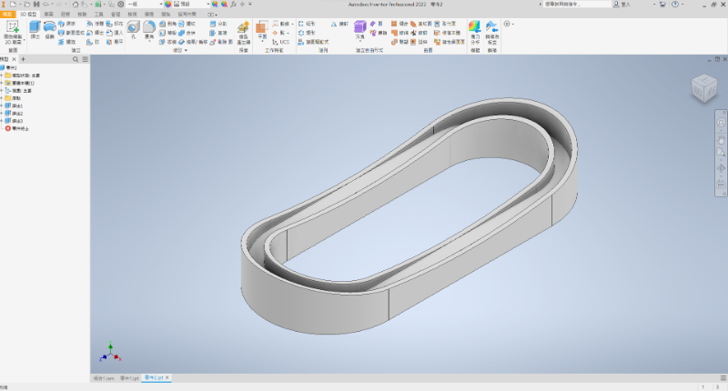
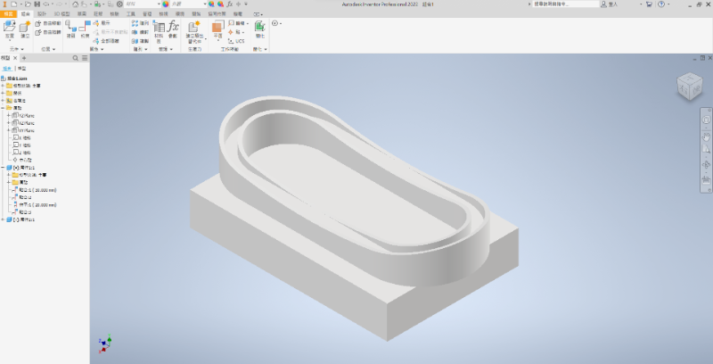
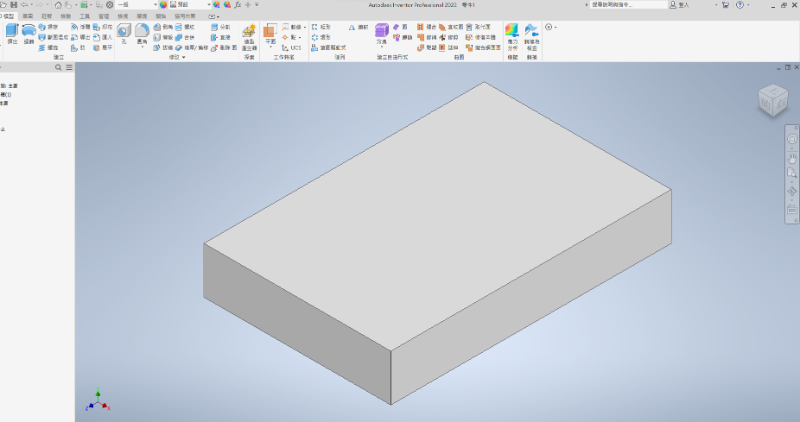
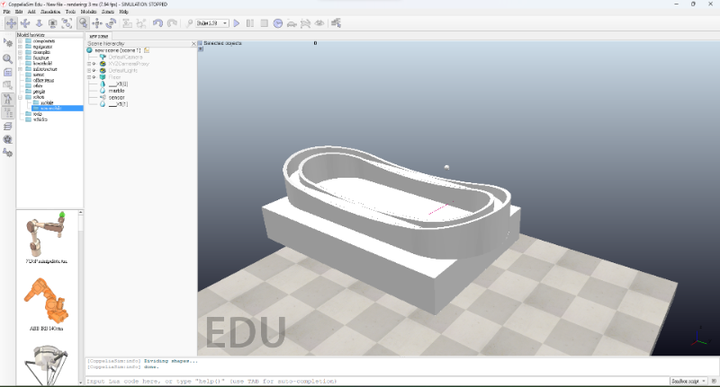

w15 <<
Previous Next >> 倉儲與網站評分項目:
考試
載點:/downloads/組合1.stl
零件圖:



組合圖:
轉入coppeliasim加入ray type， 以 IPv6 ZMQ remote API Python 程式, 配合感測器作動對鋼球施力

繪圖心得:
-
功能強大：Inventor是Autodesk公司開發的專業CAD軟體，擁有豐富的功能和工具，支援多種3D建模和設計需求。
-
用戶界面友好：它的使用介面相對直觀，有助於用戶快速上手和操作，但對於初學者可能還是需要一些時間適應。
-
多種建模方式：支援不同的建模方式，包括實體建模、組件建模、組裝設計等，能夠應對不同設計需求。
-
大型組件處理：Inventor對於處理大型組件和複雜設計有良好的效能，能夠有效地處理大量數據和複雜的結構。
-
模擬和測試功能：提供一些模擬和測試工具，如應力分析、運動仿真等，用於評估和改進設計。
-
文件和版本管理：內建版本控制和文件管理功能，有助於用戶追蹤設計的變更歷史和管理不同版本。
-
技術支援和社群：有龐大的使用者社群和技術支援，用戶可以通過社群獲取許多有用的資訊和解決問題。
w15 <<
Previous Next >> 倉儲與網站評分項目: